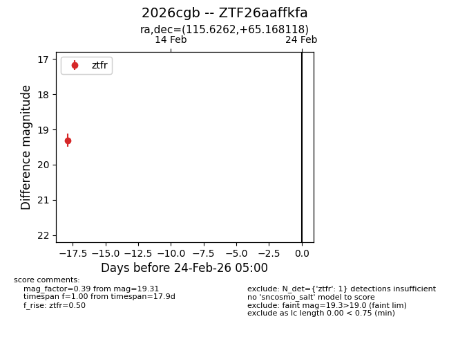
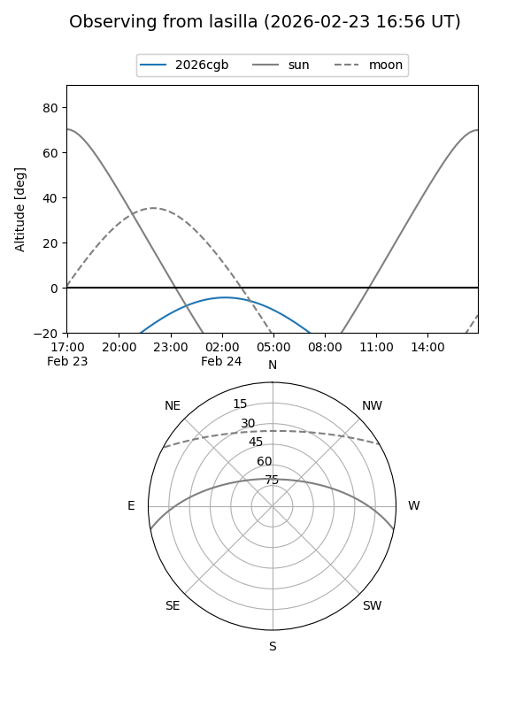
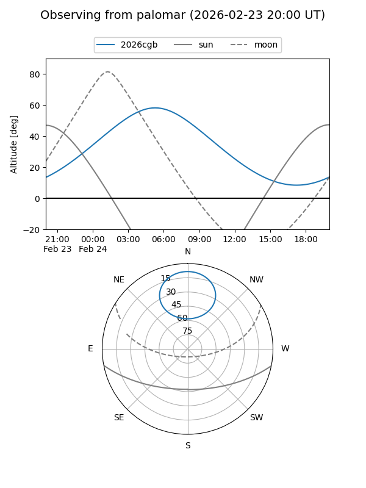

2026cgb
Target 2026cgb at 2026-02-24 09:08
Aliases and brokers:
FINK: link
Lasair: link
ALeRCE: link
TNS: link
YSE: link
alt names
ZTF26aaffkfa (ztf,fink_ztf)
2026cgb (tns,yse)
Coordinates:
equatorial (ra, dec) = 115.6262,+65.16812
equatorial (HMS+DMS) = 07:42:30.29,+65:10:05.22
galactic (l, b) = (151.0841,+29.76337)
Flags:
Photometry:
last ztfr=19.31
1 ztfr detections
Lightcurve

Visibility


Additional plots